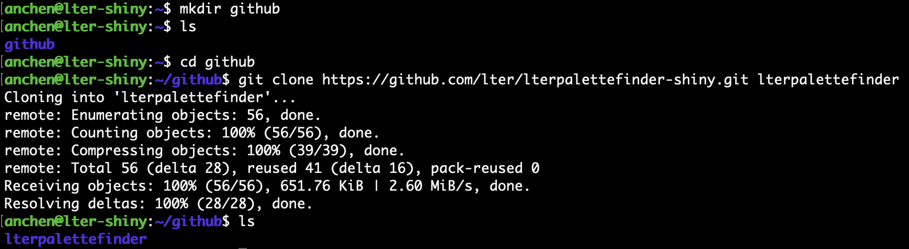
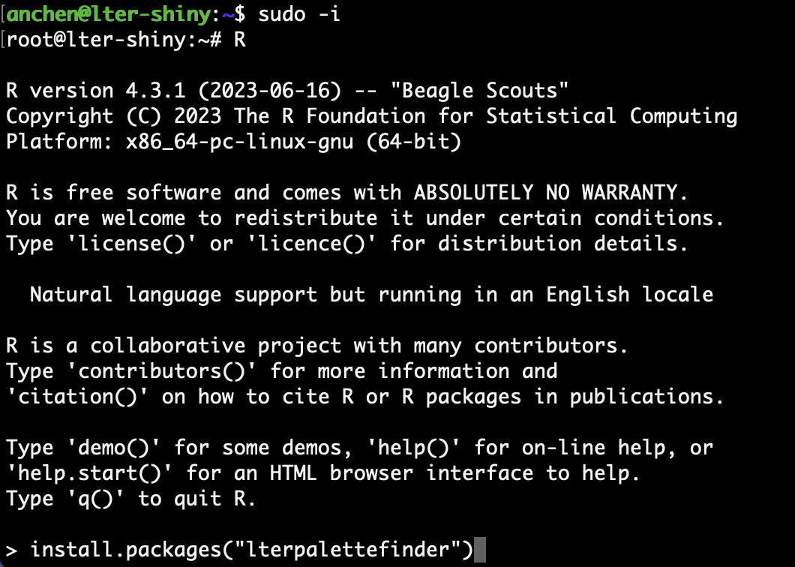
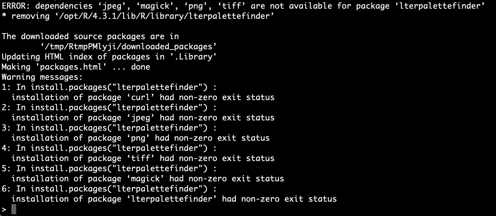
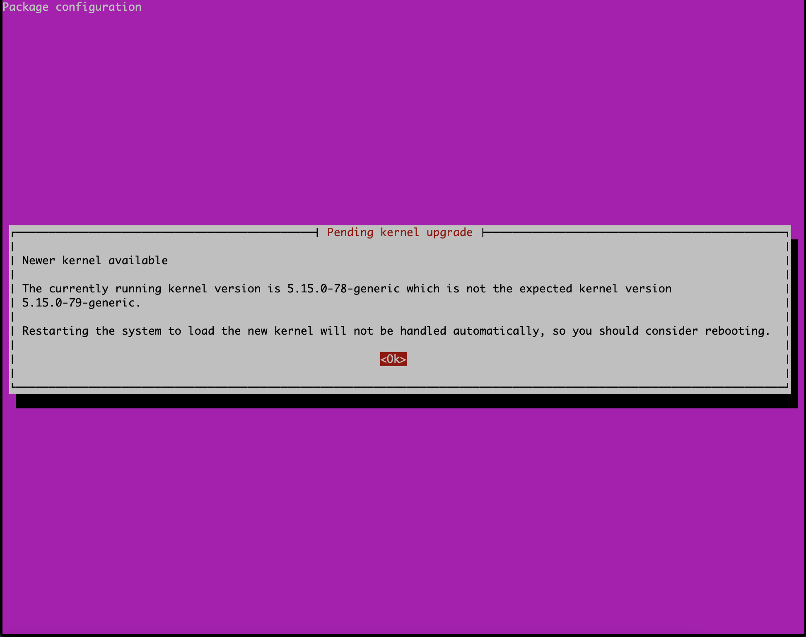
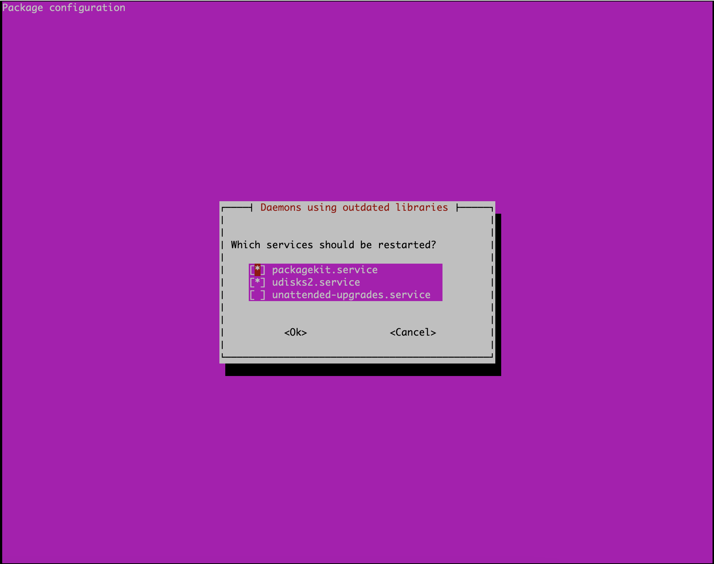
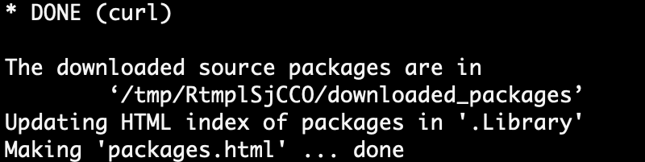

ssh <YOUR-USERNAME>@shiny.lternet.eduDeploy Shiny Apps
Note
Please note that the following instructions for deploying Shiny apps are meant to serve as internal documentation and will only work if you have sudo power on the SciComp team’s Shiny server.
Feel free to contact us if you have a LTER-related Shiny app that you would like to deploy on our server!
SciComp team members can deploy LTER-related Shiny apps on our server at: https://shiny.lternet.edu/
To deploy your working app, first make sure that all the files live at a GitHub repository. Once our sysadmin Nick Outin has made you an account on the server, you can log in via SSH.
Log In
For Mac users, open the Terminal app and type the following command, replacing <YOUR-USERNAME> with your own username.
Windows users can log in with PuTTY, using shiny.lternet.edu as the host name.
Check out NCEAS’ guide to using SSH for additional help.
Set Up Proper Permissions
Join shiny-apps
A shiny-apps user group has been created in this server. Set up the proper permissions for your account by adding yourself to this group with this command.
sudo usermod -aG shiny-apps <YOUR-USERNAME>To decipher this command a bit: sudo will enable you to run commands as a user with full control and privileges. The usermod command is used to modify user account details. The basic syntax is:
usermod [OPTIONS] <YOUR-USERNAME>The -G option will add the user to a supplementary group. The -aG combined options will add the user to the new supplementary group while also leaving them in the other supplementary group(s) they were already a part of.
Note
As an FYI, the apps on the server will run as the user shiny, so shiny is also in the shiny-apps user group.
Allow Access to Your Home Directory
Additionally, you need to allow shiny access to your user home directory by running:
sudo chmod a+x /home/<YOUR-USERNAME>This chmod (change mode) command is used to control file permissions. Basic syntax:
chmod [OPTIONS] MODE FILE/DIRECTORYThere are two “modes” that you can use to set permissions: Symbolic and Octal mode. The Symbolic mode uses operators and letters. For example, the a option denotes all the owner/groups the file/directory belongs to. The + operator grants the permission, and the letter x stands for the execute permission.
Tell git Who You Are
Now that your account has the proper permissions, use the git config commands to tell git who you are.
git config --global user.name "<YOUR-GITHUB-USERNAME>"
git config --global user.email "<YOUR-GITHUB-EMAIL>"Replace <YOUR-GITHUB-USERNAME> and <YOUR-GITHUB-EMAIL> with your own credentials. You can check to see if you entered your details correctly by entering git config --list.
Copy Your App to the Server
The easiest way to get all the files for your app to the server is by git clone.
If you like, you can create a folder named “github” to store all your future apps. For example, in the screenshot below, I created a “github” folder using the mkdir command in my home directory.
To check that the folder was created, I can list all the files/folders in my current directory with ls. Since I want my app to be inside the “github” folder, I used the cd command to change into that directory.
Finally, git clone the GitHub repo that has all the files for your app. Here, I am cloning the lterpalettefinder-shiny repo to my local directory on the virtual machine as lterpalettefinder.

Tip
You can go one level above the current directory by typing cd ..
Install Necessary R Packages
After you cloned the repository for your app, you can start installing the necessary R packages! To make these packages available for all users, you will want to execute commands with the root user’s privileges by typing the sudo -i command. Then open R by simply typing “R” and install packages with the usual install.packages() function.

Missing Dependencies?
If you run into an error installing a R package, it’s likely because the server does not have the required dependencies installed yet.
For example, I wanted to install the lterpalettefinder R package, but I got lots of errors on missing dependencies instead.

I saw that the curl dependency was missing, so I attempted to install that. However, R gives me another error.

Looking closer, it asks me to install libcurl4-openssl-dev first. To install this Ubuntu package, I exited R with q() and logged off root with exit. Once I’m back in my own user profile, I can use the sudo apt install command to install libcurl4-openssl-dev.
If you get these prompts to restart services, you can tap Return/Enter to continue the installation.


Afterwards, libcurl4-openssl-dev installed successfully, and then I can finally install the missing curl dependency in R!

You can repeat a similar process to find and install the rest of the required dependencies before you are able to install certain R packages.
Symlink to Deployed Folder
Since all the Shiny apps are located under /srv/shiny-server/, how can we deploy the app we have in our local directory? We can create a symlink (symbolic link) between the local directory and /srv/shiny-server/. A symlink is essentially a pointer to other folders.
Create the link by running this command:
sudo ln -s <LOCAL-DIRECTORY-OF-APP> <SHINY-SERVER-DIRECTORY-OF-APP>Replace <LOCAL-DIRECTORY-OF-APP> with your own directory and replace <SHINY-SERVER-DIRECTORY-OF-APP> with the file path of where you would like your app to deploy.
For example, the actual lterpalettefinder app lives under my home directory, but it needs to be deployed under /srv/shiny-server/, so I ran this command to link the two:
Now /srv/shiny-server/lterpalettefinder points to /home/anchen/github/lterpalettefinder!
You can check the current symlinks by navigating to /srv/shiny-server/ and typing ls -l.
Note
The name of the deployed folder corresponds to the URL: https://shiny.lternet.edu/<YOUR-APP>/
Debug App and Check its Live Link
If everything goes right, your app will be live at https://shiny.lternet.edu/<YOUR-APP>/! If not, don’t worry and try troubleshooting what went wrong. Remember to check file paths and required R packages.